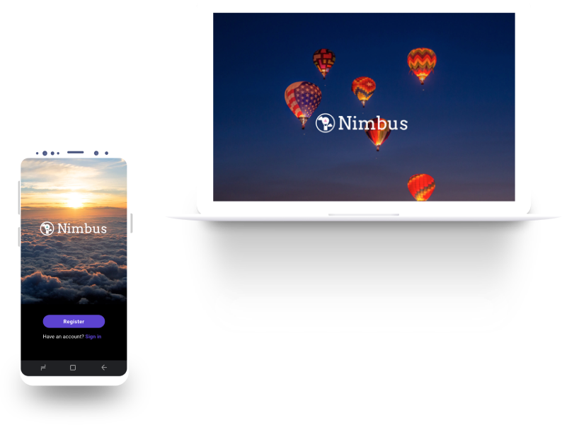
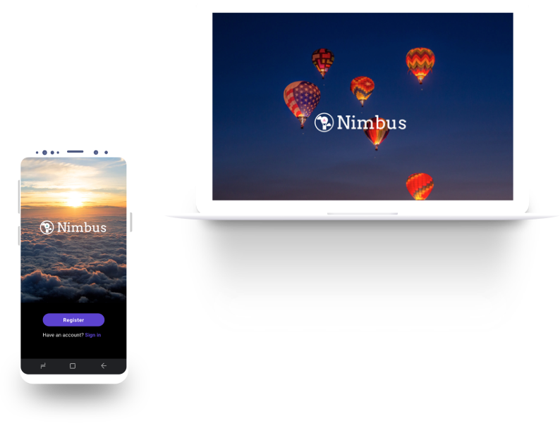

Work
Nimbus
Cloud storage app providing seamless collaboration, content creation, and sharing.
Role
- User Research
- UX/UI Design
- Branding
Cloud storage app providing seamless collaboration, content creation, and sharing.
I Identify customer needs, define the problem, and create a criteria for success aimed at understanding your user’s goals.
With the goal of creating full-fledged clickable prototypes, I utilize the research to create user stories, flow charts, and wireframes that help me solve the design challenge.
With prototypes in hand, I focus on testing real users. I create metrics specific to the design, conduct moderated research, evaluate the results, and propose changes.
With the help of research, I’m able to create moodboards, logos, color palettes, and typography studies consistent with the users of the product.
I am a passionate designer who loves to listen and learn more about people. I take this passion and apply it to my grasp of UX concepts to deliver functional and delightful experiences for the user. I am looking to join a team where I can contribute immediately. I will relocate for an awesome opprotunity!